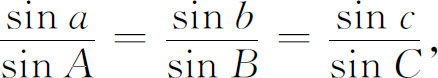
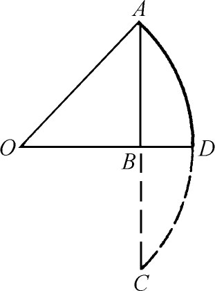
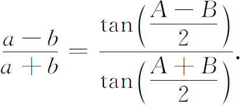
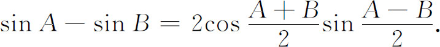

4．三角
1450年以前三角主要是球面三角；测量学还继续用罗马的几何方法。虽然斐波那契在他的《几何实习》（Practica Geometriae，1220）里就曾经倡导平面三角的方法，差不多到1450年左右平面三角学在测量中才变得重要起来。
15世纪末叶和16世纪早期由德国人完成了三角学中的新方法，通常他们在意大利留学然后回到他们的祖国。当德国开始兴旺时，北德汉萨同盟（Hanseatic League of North Germany）控制着很多贸易，得到很多财富，于是商人中的赞助者就可以支持我们将要提到的很多人的工作。三角学的工作受到航行、推算日历和天文学的推动，对最后提到的这个领域的兴趣由于日心论的创造而增强，这日心论我们将在后面再讲。
维也纳的波伊尔巴赫（George Peurbach，1423—1461）开始去校订《大汇编》的拉丁文译本，这本书是由阿拉伯版本转译的，他打算由希腊原文翻译。他还开始去制作更精确的三角函数表。但波伊尔巴赫死时太年轻，他的工作由他的学生米勒（Johannes Müller，1436—1476）［又叫雷格蒙塔努斯（Regiomontanus）］继续下去，后者在欧洲传播了三角学。雷格蒙塔努斯在维也纳跟波伊尔巴赫学习天文学和三角学后去罗马跟贝萨里翁（Bessarion）大主教（约1400—1472）学习希腊文，并且从逃避土耳其人的希腊学者那里收集希腊文的原稿。1471年他定居在纽伦堡，在瓦尔特（Bernard Walther）的保护之下。雷格蒙塔努斯翻译了一些希腊作品——阿波罗尼斯的《圆锥曲线》、阿基米德和赫伦的部分作品，自己成立印刷厂出版这些书。
他仿照波伊尔巴赫采用印度人的正弦，即半弧的半弦，然后造了一个正弦表取圆半径为600000单位和另一个取半径为10000000单位的正弦表。他还计算了正切表。在《方位表》（Tabulae Directionum，写于1464—1467）一书中他给出了五位正切表并取十等分角度，这在那个时代是一个很不平常的做法。
15，16世纪有很多人在做表，其中有莱伊提柯斯（George Joachim Rhaeticus，1514—1576）、哥白尼、韦达（1540—1603）和皮蒂斯科斯（Bartholomäus Pitiscus，1561—1613）。这一工作的特点是让圆半径的值很大很大以便能得到更精确的三角函数值而不用分数或小数。例如，莱伊提柯斯计算一个正弦表，半径取的是1010，另一个是1015，并且对每10秒弧给一个值。皮蒂斯科斯在他的《宝库》（Thesaurus，1613）中修正并发表了莱伊提柯斯的第二个三角函数表。“trigonometry”一词就是他提出的。
更基本的工作是解平面和球面三角形。差不多直到1450年球面三角的内容由一些不严谨的法则组成，这些法则的基础是希腊、印度和阿拉伯的译本，最后这个译本来自西班牙。直到这个时候，欧洲还不知道东方阿拉伯人阿布尔韦法和纳西尔丁的工作。雷格蒙塔努斯能够从纳西尔丁的工作中得到益处，并且在1462年到1463年写的《论三角》（De Triangulis）中用更为有效的方式把平面三角、球面几何和球面三角中有用的知识放在一起。他给出球面三角的正弦定律，就是

和涉及边的余弦定律，即
cos a＝cos bcos c＋sin bsin ccos A．
《论三角》直到1533年才出版。在这同时沃纳（Johann Werner，1468—1528）在《论球面三角》（De Triangulis Sphaericis，1514）一书中改进并发表了雷格蒙塔努斯的思想。
经过雷格蒙塔努斯多年的工作，球面三角仍然因为需要大批的公式而处于困难中，这部分是因为雷格蒙塔努斯在他的《论三角》一书中（甚至哥白尼在一个世纪之后）只用到正弦和余弦函数。还因为钝角的余弦和正切函数的负值没有被承认为数。
莱伊提柯斯是哥白尼的学生，他改变了正弦的意义。原来说AD的正弦是AB，他改成说角AOB的正弦是AB（图12.1）。但AB的长仍依赖于半径长度单位的选取。作为莱伊提柯斯改变的结果三角形OAB成为基本的结构，而半径为OA的圆成为附带的了。莱伊提柯斯采用了全部六个函数。

图12.1
韦达将平面和球面三角进一步系统化并稍微加以发展，韦达的职业是律师，但是他更被认为是16世纪第一流的数学家。他的《标准数学》（Canon Mathematicus，1579）一书是他在三角的许多工作中的第一本。在这里他把解直角和斜角平面三角形的公式收集到一起，也包括他自己的贡献正切定律：

对球面直角三角形，他给出了用已知的两部分计算另一部分所需的一套完全的公式，并给出了用来记住这套公式的法则，我们现在把它叫做纳皮尔法则。他还提出了涉及钝角球面三角形角的余弦定律：
cos A＝-cos Bcos C＋sin Bsin Ccos a．
很多三角恒等式是托勒玫建立的，韦达给以补充。例如，他给出了恒等式

还有用sinθ和cosθ表示sinnθ和cosnθ的恒等式。后一个恒等式写在他的《斜截面》（Sections Angulares）一书中，这本书于他死后在1615年出版(2)。韦达把这些恒等式表示成代数形式，虽然那些符号并不是现代的。
他用sinnθ的公式去解比利时数学家罗马努斯（Adrianus Romanus，1561—1615）在他的书《数学思想》（Ideae Mathematicae，1593）中作为对法国人的挑战而提出的一个问题。这个问题是求解x的一个45次方程。法国的亨利（Henry）四世找来了韦达，他认为这个问题相当于：给定了一弧所对的弦，求该弧四十五分之一所对的弦。也就是等价于：用sin A表示sin 45A，并求出sin A。如果x＝sin A，那么这个代数方程对x就是45次的。韦达知道这个问题可解，只要把这个方程分成一个5次的方程和两个3次的方程，而这些方程他很快地解出。他给出了23个正根，但忽略了负根。在他的《回答》（Responsum，1595）(3)一书中他解释了他的解法。
16世纪三角学开始从天文学里分出来，并成为数学的一个分支。三角学在天文学方面的应用依然是广泛的，但是在其他学科方面的应用——例如在测量学方面——说明有必要用更独立的观点来研究三角学。